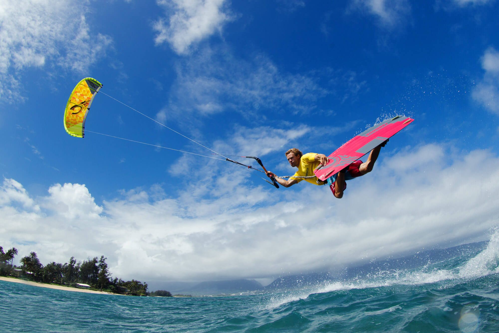
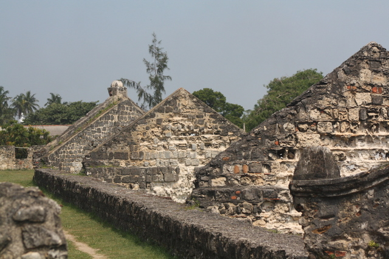

Key Attractions

Dolphin Watching
One of the best dolphin-watching spots in Sri Lanka.

Kitesurfing
World-class kitesurfing conditions at Kalpitiya Lagoon.

Bar Reef
Sri Lanka’s largest coral reef ideal for snorkeling.

Kalpitiya Fort
Historic Dutch fort overlooking the lagoon.

Kalpitiya Lagoon
Serene waters ideal for boat rides and relaxation.